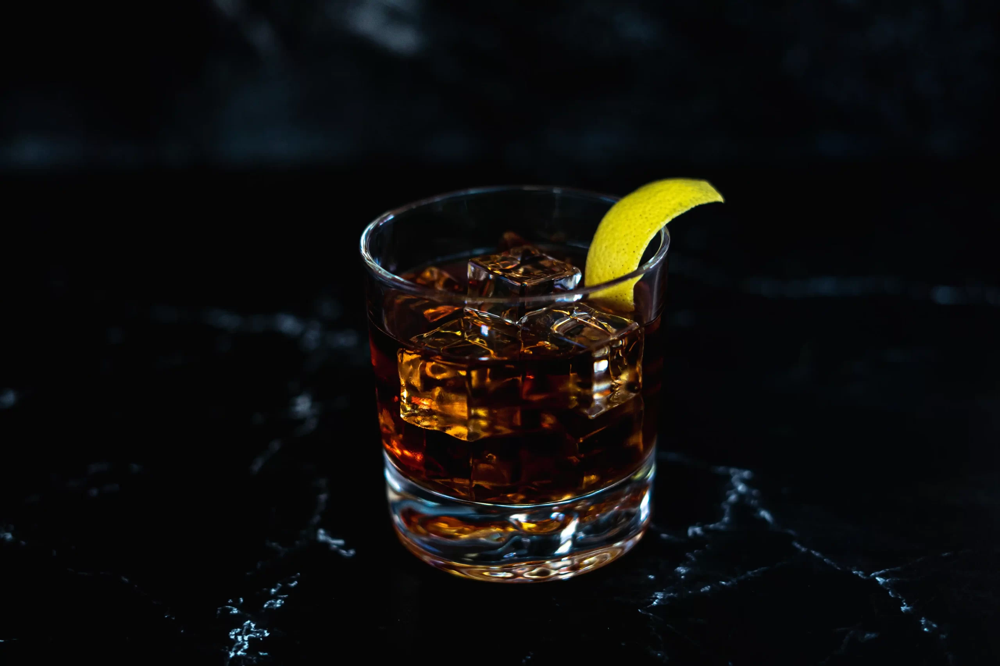

Vieux Carré was invented in New Orleans sometime in the 1930s. It is made with rye whiskey, Cognac, sweet vermouth, Benedictine (French herbal liqueur), Angostura bitters, and Peychaud's bitters. The ingredients are mixed in a mixing glass filled with ice. The combination is then strained into an old-fashioned glass filled with ice. The cocktail is traditionally garnished with a maraschino cherry and a lemon or an orange twist. Vieux Carré was first mixed by Walter Bergeron, a bartender at the Carousel bar located at Monteleone.
Meal prep time : 5 minutes
Servings : 1